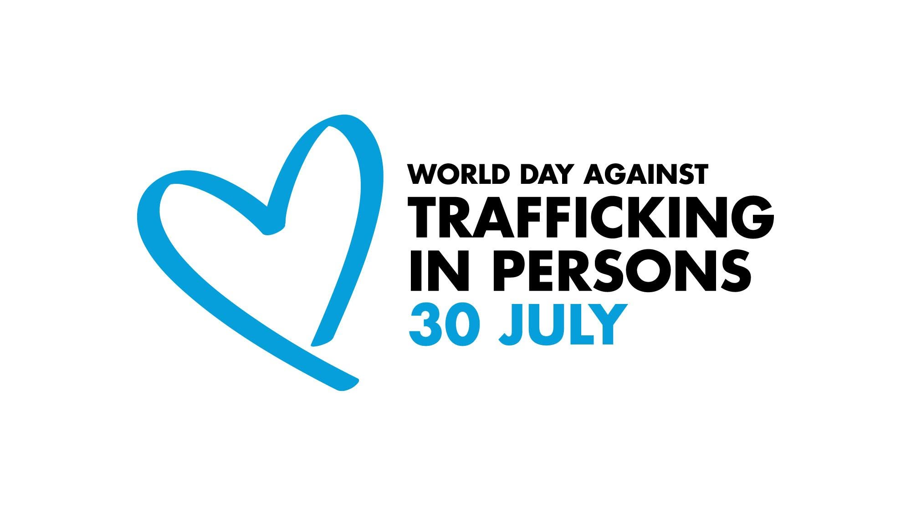
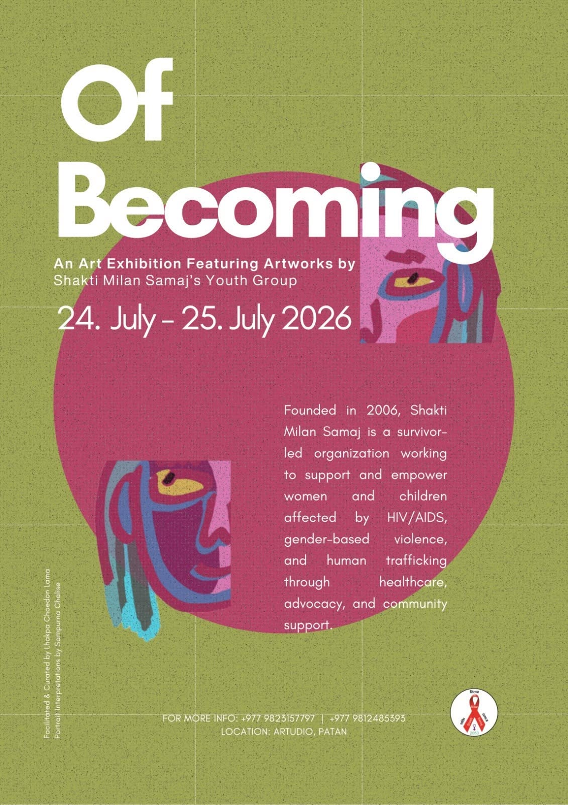
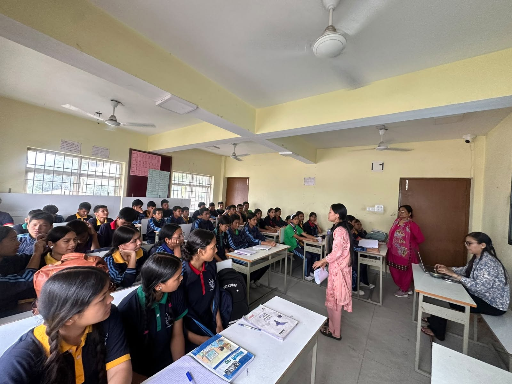
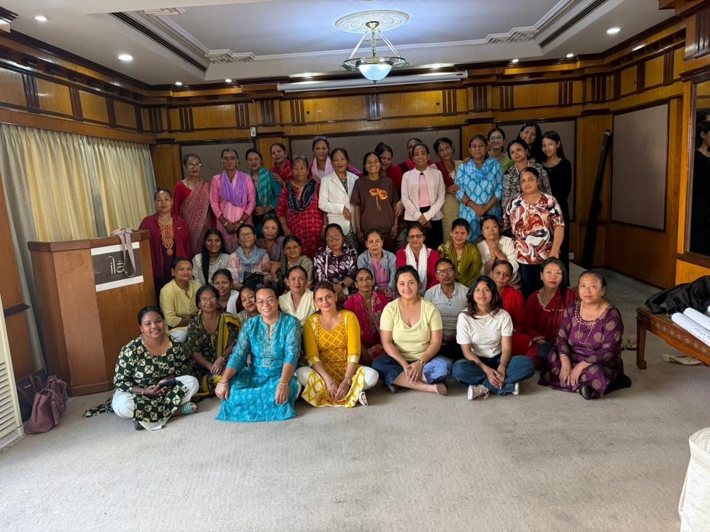
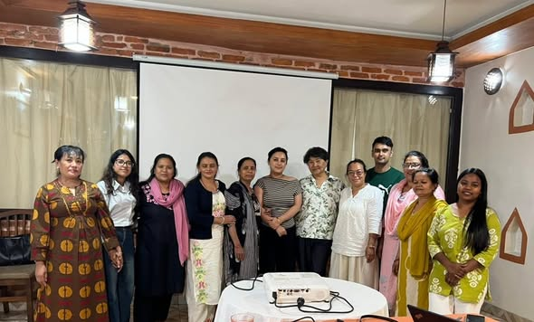
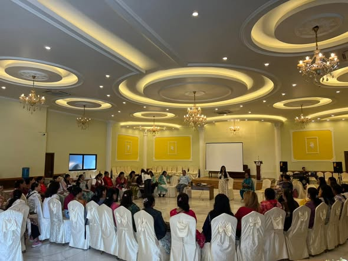

WORLD DAY AGAINST TRAFFICKING IN PERSONS 2026
“Trapped behind the scam” Human trafficking is taking on new and increasingly
complex


Shakti Milan Samaj, on 24th and 25th July 2026 successfully organized and conducted 'Of Becoming', an exhibition showcasing our youth group's

Some glimpses from the recently conducted program to initiate discussion on the curriculum and syllabus revision for students of grade 6, 7 and 8.

Shakti Milan Samaj, on 17th June, 2026 conducted a sharing meeting with its beneficiaries emphasizing on the importance of effective communication and

On 27th May 2026, an orientation session on Sexual and Reproductive Health and Rights (SRHR) was successfully conducted by Shakti Milan

SMS on June 2nd, 2026 conducted a sensitization program with our brave women on their experiences of violence and stigma especially gender-

Shakti Milan Samaj family, in its core value recognizes the power of education. Education, especially for those that are


Some glimpses from the recently conducted program to initiate discussion on the curriculum and syllabus revision


Shakti Milan Samaj, on 18th May 2026 conducted a Consultation and Discussion Meeting with ART counsellors,


Shakti Milan Samaj on 21st May 2026, in collaboration with NAP+N and Recovery Nepal Federation conducted a


SMS successfully conducted an interaction program with the beneficiaries and their family members about the experiences


Shakti Milan Samaj on 4th February 2026 conducted a coordination meeting with respective health service


Solidarity and collaboration for fueled oucome! SMS recently conducted a sensitization program focused towards


Shakti Milan Samaj on 4th February 2026 conducted a coordination meeting with respective health service


Shakti Milan Samaj successfully conducted an orientation program with health service providers about the recent


Glimpses from the stall we occupied last week on the occasion of World Environment Day. Very grateful for the


This is for our caregivers; we see them, we see their strength and capacity to continuously show up to work, help uplift each


Glimpses from the recent coordination program conducted by Shakti Milan Samaj to receive follow-up


Shakti Milan Samaj recently conducted a capacity building program with the important facilitation of Mr. Bhawani Psd.


×

×